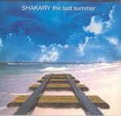

| Artist: | Shakary |
| Title: | The Last Summer |
| Label: | Prog Factory/self produced SHK 30324-2002 |
| Length(s): | 49 minutes |
| Year(s) of release: | 2002 |
| Month of review: | [04/2006] |
| 1) | Different Places | 4.59 |
| 2) | The Play Of My Life | 4.52 |
| 3) | Sparkles In The Dark | 7.20 |
| 4) | Love Warchild Of 64 | 6.41 |
| 5) | Masks | 6.44 |
| 6) | Two Days Left | 5.26 |
| 7) | Dreaming In L.A. | 14.07 |
The Play Of My Life is more in the line of what I expect. The mood is somewhat more relaxed, more melodic too. For some reason, it is easy to picture that these melody lines were developed with a certain story or concept in mind. The vocals also strengthen this impression, but that is mainly because they are more spoken than sung.
Sparkles In The Dark is a soothing ballad like track, a bit melancholic too. The female choirs work well here, and the piano work has a good melody. Then the proggy side comes in with the organ, but the music stays subdued thus far. The vocals are somewhat accented, reminding me a bit of Fruitcake, also because of the melacnholic air. An other useful reference is Like Wendy. The song ends with bagpipes, and trumpet (a real one is credited, but this one sounds rather thin). A surprising and nice ending.
Love Warchild Of 64 opens with a long and heavy workout on organ and rhythm guitar, the first meandering, the second repetitive. The vocalist sounds quite different in a way. The end result is one in which tension plays a role. This is a lot less friendly than what we are used to from Shakary, and the guitar solo is also a mean one. Then the opening comes in again.
Masks brings us to Marillion's Brave territory again, with sparse melodic piano, rich in tension. The harmony vocals are amateurish though. The guitar solo is reminiscent of Twelfth Night, very vibrant and symphonic. Two Days Left is a somewhat bouncy, compact song, with a strong role for the drummer who lets the reins loose somewhat, filling in the holes. The guitar is typically symphonic, playing some nice melodic material. The interlude features organ and anthemic guitar work. The song closes with vocals and acoustic guitar. The vocals remind me a bit of Camel.
Dreaming In L.A. is the epic tune, opening with harpsichord and treated piano. Then abruptly we move into a passage dominated by guitar. The song has some strong tension building in which the vocals are vocoded, and also a meandering jazzrock style organ solo. The final is plenty bombastic, with some light orchestral touches.